AI-Driven Omnidirectional Robot
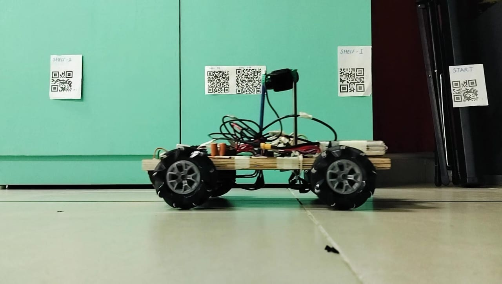
Developed an AI-driven omnidirectional robot for library management, utilizing Jetson Nano, OpenCV, and Firebase to automate book tracking and navigation. The system scans QR codes, follows predefined paths using IR sensors, and updates a real-time database, streamlining library operations.
This project showcased my expertise in robotics, computer vision, and embedded systems, delivering an innovative solution for efficient library automation. Explore the code here.
Women Safety Chatbot
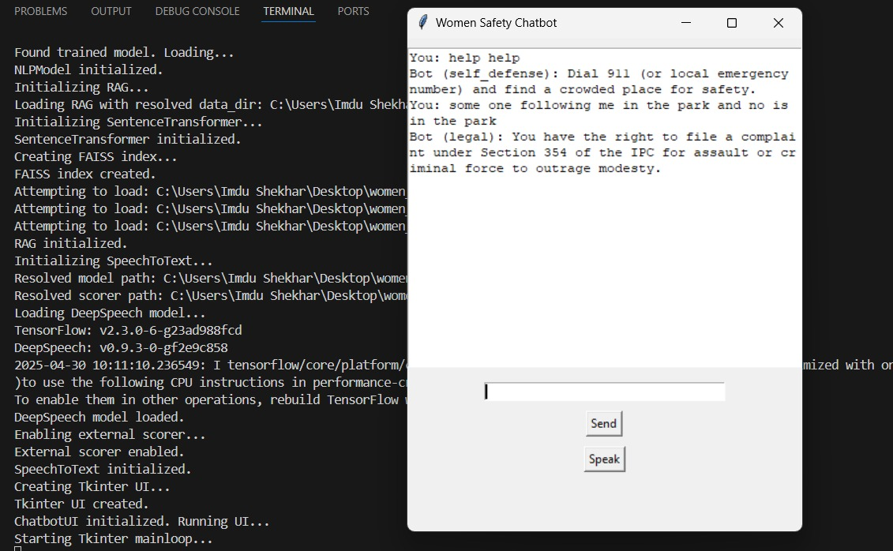
Developed an AI-powered chatbot to enhance women’s safety, supporting voice and text inputs for emergency alerts, safety tips, and location-based guidance.
This project leveraged Python, BERT for intent classification, and Tkinter for a user-friendly GUI, demonstrating skills in AI and NLP. Check the code here.
PDFChatApp
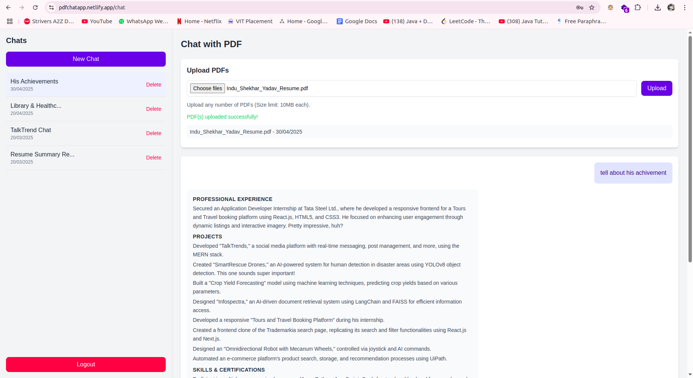
Created an AI-driven document retrieval system that extracts and answers questions from PDF documents using Python, LangChain, and vector search.
This project showcased my skills in NLP, vector databases, and Firebase integration for storage. Explore the code here.
BookHive- Library Management System
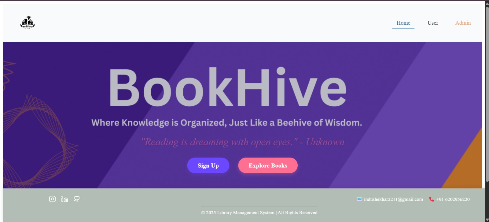
Developed a full-stack library management system using the MERN stack, enabling book borrowing, returns, and inventory tracking with a user-friendly interface.
This project highlighted my skills in full-stack development and database management, using MongoDB and Express.js. Check the code here.
Invoice AI
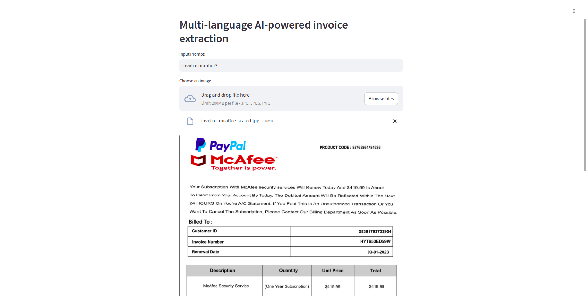
Built an AI-driven invoice processing system that automates data extraction and validation from invoices using Python, OCR, and NLP techniques.
This project demonstrated my expertise in AI, data processing, and automation, utilizing tools like Tesseract and SpaCy. Explore the code here.
AI Roadmap Generator
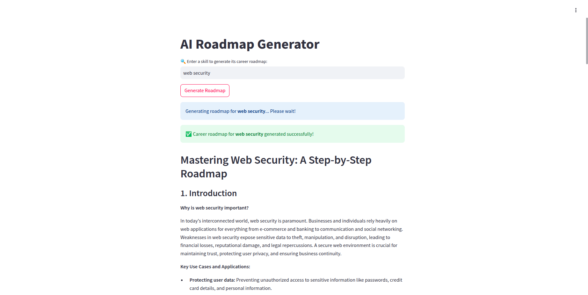
Developed an AI-powered tool to generate personalized learning roadmaps for users based on their goals and skill levels, using Python and machine learning algorithms.
This project showcased my ability to integrate AI with user-friendly interfaces, leveraging tools like Pandas and Scikit-learn. Check the code here.
TalkTrend
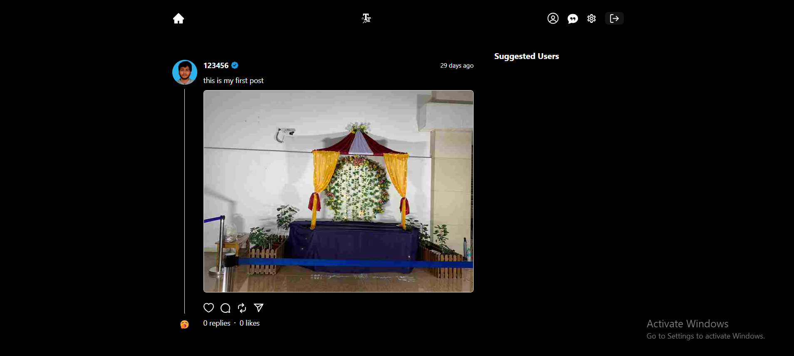
Created TalkTrend, a dynamic social media platform using the MERN stack, featuring real-time messaging, post management, likes, comments, and notifications.
This project emphasized my skills in MERN stack development, Socket.IO for real-time communication, and responsive design with Chakra UI. Explore the code here.
GoGlobe
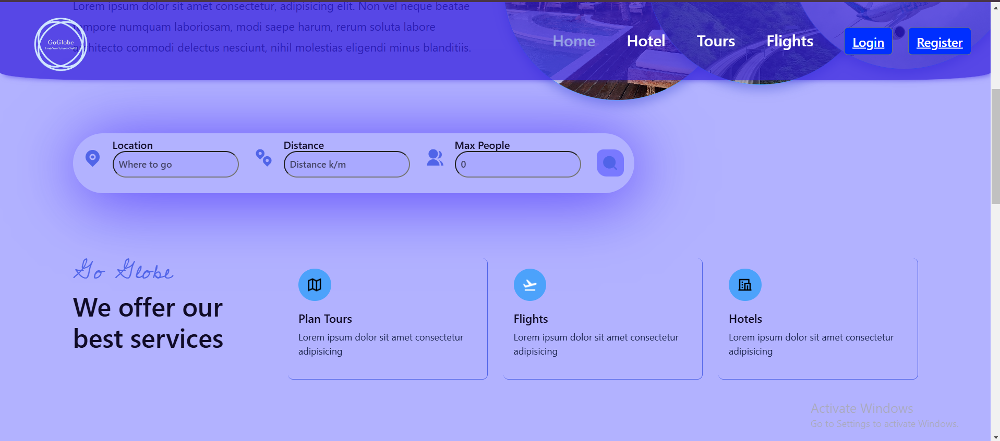
Developed GoGlobe, a tours and travel platform using the MERN stack, enabling users to explore destinations, book tours, and access personalized recommendations.
This project highlighted my skills in full-stack development, API integrations, and user-centric design, enhancing travel experiences through technology. Dive into the code here.
Amazon Clone
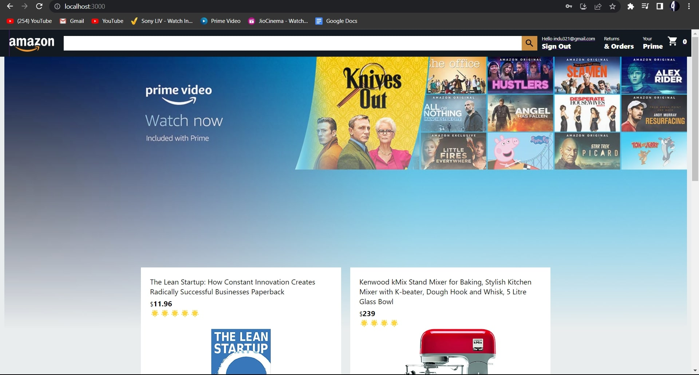
Built a full-stack Amazon clone using React and Firebase, replicating core e-commerce functionalities like product browsing, cart management, and user authentication.
This project showcased my expertise in React, Firebase, and full-stack development, demonstrating strong problem-solving skills. Visit the code here.
Cric-Play
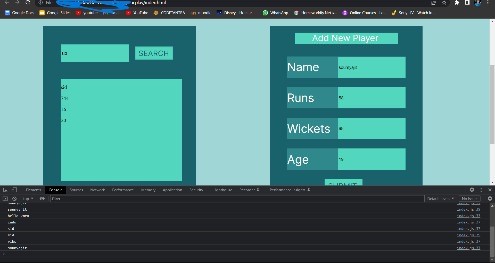
Developed a cricket-playing app using JavaScript, featuring functionalities like search, delete, and add operations for managing player data.
This project strengthened my JavaScript programming skills and data manipulation techniques, delivering an interactive user experience. Check the code here.
WEATHER-SITE
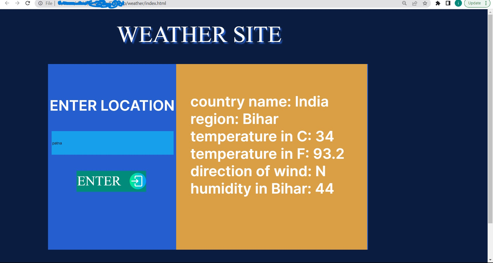
Designed and developed a weather website using HTML, CSS, and JavaScript, providing users with real-time weather updates through an intuitive interface. Integrated a weather API to fetch and display data dynamically.
This project honed my skills in front-end development and API integration, emphasizing user-friendly design. Note: The API trial may have expired. Explore the code here.